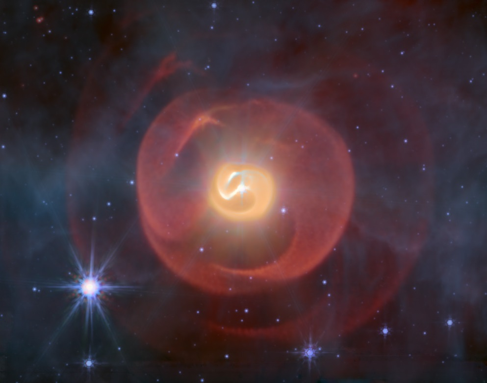

Wolf-Rayet Binaries and the Apep System
tl;dr: Some Wolf-Rayet stars in binaries produce perfect spirals of dust. I've made a new code to model these, and I apply it to the Apep system to discover a bunch of new things!
You can access our paper on Apep for free on arXiv: arXiv:2507.14610
You can also access our book chapter on Wolf-Rayet colliding wind binaries for free on arXiv: arXiv:2412.12534
Stars come in all shapes and sizes, and the main property that affects their life is their mass. Massive stars end their lives in the spectacular fireworks we call supernovae, and the most massive stars get rid of all of their hydrogen before they do it; we call these most-massive stars Wolf-Rayet stars. Wolf-Rayet (WR) stars have uniquely strong stellar winds, and they are constantly pumping out enriched material like carbon or nitrogen into the interstellar medium. Most massive stars are in binary systems, though, and when one of these carbon-type WR stars is in a close binary with another star they produce dust. This is because the winds of the stars collide, get compressed and mix together; this allows the gas to cool down into dust when it's far enough away from the stars. This dust is formed along a shock cone, but as the two stars in the binary orbit each other, the position of this cone rotates around the centre of mass. Hence, the dust is wrapped into a beautiful geometric spiral which gives us all the information we could ever want about the stars' orbits and their winds. These spirals look something like this:
The above image was taken by the James Webb Space Telescope (JWST), and is a false-colour image made from data in mid-infrared wavelengths (which is where the thermal dust is bright!). We describe this system and a bunch of others like it in a book chapter published in Elsevier's Encyclopedia of Astrophysics (see link at top).
With the new JWST data that you see above, I wrote a paper describing everything we can learn from the dust geometry of the system (see link at top) which we call Apep (after the Egyption god of chaos). We found that the two WR stars at the centre of the system (the only star system we know of in this configuration!) are on a very long period, eccentric orbit. We also found that there is a third star in the system, a blue supergiant star, whose wind and ionising radiation is destroying dust in a circular cavity as the nebula expands. I like to refer to this third star as Ouroboros — the serpent eating it's own tail (which is what I titled the paper!). Take a look at the animation below and see if you can spot the circular imprint of destruction!

The bright dot in the centre of the above animation is the two WR stars in the Apep system, and the dot just nearby is the third supergiant star.
Our paper has received some media attention, and I was very lucky to be interviewed by Stephen Luntz for a story in IFLScience.
My supervisor and collaborator A/Prof Benjamin Pope was also invited to write a story on our work in The Conversation.
I'd highly recommend checking it out!
As with my DES Time Dilation paper, I've made an annotated accessible summary of my paper which you can see below. I'd like to once again thank Dr Claire Lamman, for first doing these annotated summaries — they're a great idea!
Click here to open the below pdf in a new tab!Media Attention
Our team has been incredibly lucky to receive a huge amount of media attention on our results and the beautiful JWST picture above. I've compiled a list of all of the releases and stories written about our work,
which you can see below!
The official NASA Press Release
The Caltech Press Release/Story
The STScI Press Release
The Macquarie University Press Release
Space Australia by Rami Mandow
Gizmodo by Passant Rabie
Forbes by Jamie Carter
BBC Sky at Night Magazine by Iain Todd
IFLScience by Stephen Luntz
BadAstronomy Newsletter by Phil Plait
The Conversation by Benjamin Pope
Sonshine Radio by Bec & Asa and Laura Driessen
Universe Today by Evan Gough
The Debrief by Ryan Whalen
AstroKirsten on Facebook by Kirsten Banks
Astro Alexandra on TikTok by Alexandra Doten
Anton Petrov on YouTube by Anton Petrov